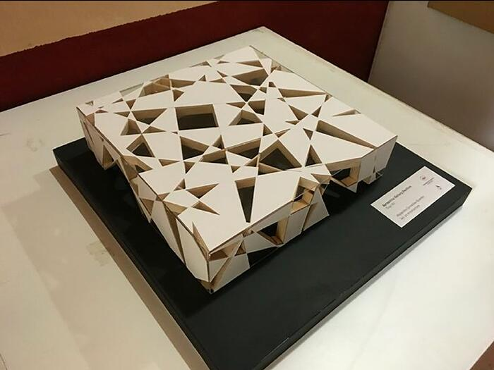
Il modello non è una miniatura illustrativa, ma in questa fase è un test percettivo. Misura la luce, la densità, la soglia, la presenza fisica della forma. È il primo confronto tra astrazione e materia: l’idea comincia a pesare, ad avere spessore, a occupare lo spazio. Il progetto diventa reale, anche se ancora in forma provvisoria.
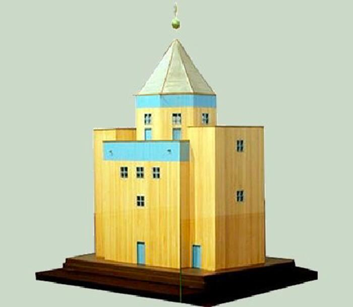
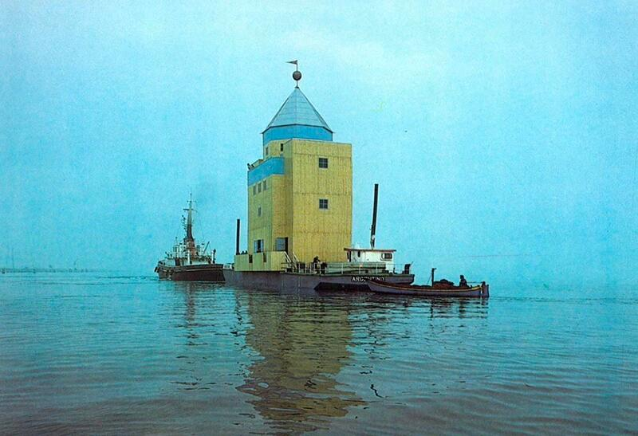
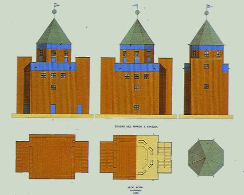
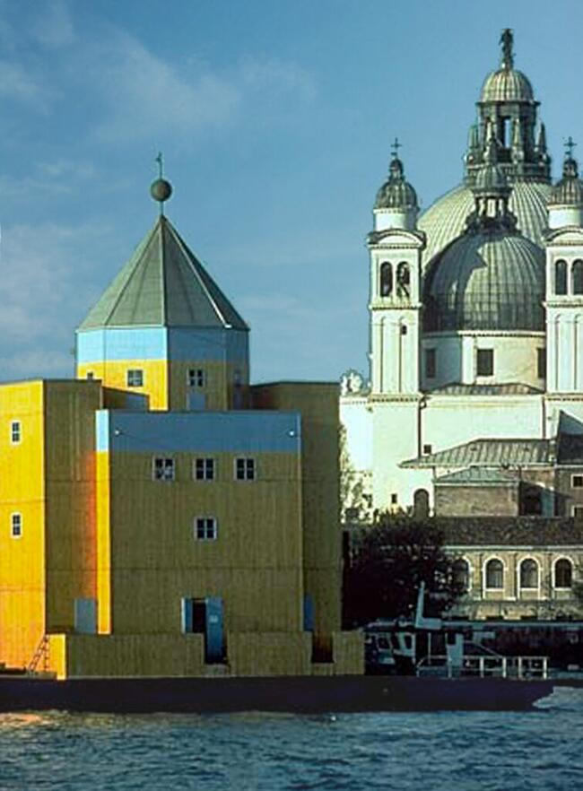
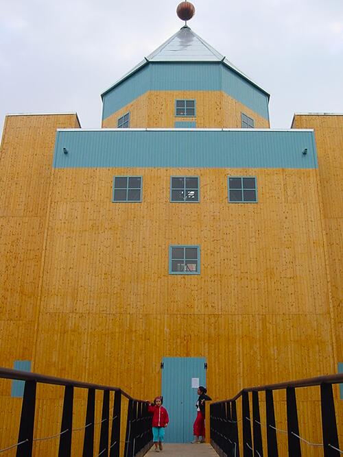
Il modello come verifica tipologica e comportamentale
Nel Teatro del Mondo, il modello assume un ruolo decisivo: non è un’anticipazione dell’oggetto finale, ma il luogo in cui l’idea architettonica viene messa alla prova nella sua essenza più profonda. Rossi concepisce il teatro come una figura primaria — una torre lignea sospesa sull’acqua — ma questa purezza tipologica non è un punto di partenza stabile: è il risultato di un processo continuo di verifica, e il modello è lo strumento attraverso cui la forma acquista precisione, necessità e coerenza.
Il modello consente innanzitutto di verificare la logica strutturale: un edificio galleggiante non può essere rappresentato solo graficamente, deve essere testato nella sua stabilità, nelle proporzioni del basamento, nel rapporto fra pieno e vuoto. Nel laboratorio critico del modello, la torre e la piattaforma trovano il loro equilibrio fisico prima ancora che formale.
Ma soprattutto, il modello permette a Rossi di esplorare la natura quasi metafisica dell’opera: un corpo architettonico essenziale che si staglia sul paesaggio veneziano come un’icona senza tempo. La riduzione materica del modello — legno, superfici neutre, volumi puri — amplifica la dimensione archetipica dell’edificio e lo restituisce come una presenza assoluta, sospesa fra città, acqua e cielo.
In questo senso il modello non “rappresenta” il Teatro del Mondo: lo costruisce criticamente. Ne mette alla prova la tipologia, ne affina le proporzioni, ne verifica la capacità di diventare luogo attraverso la forma. Il teatro che emerge non è la miniatura di un’architettura, ma l’architettura stessa nella sua forma più concentrata.
Il Teatro del Mondo mostra così, in modo esemplare, che il modello è un dispositivo conoscitivo: un campo in cui la forma si misura con la realtà fisica e simbolica fino a trovare la propria inevitabilità.
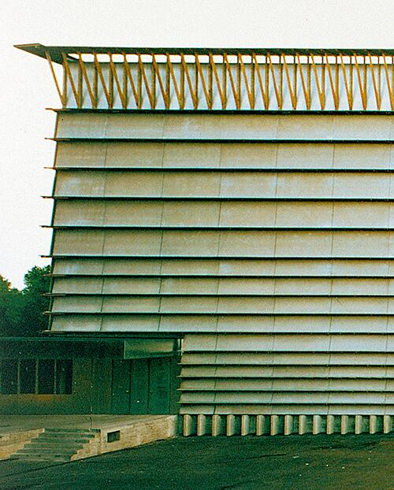
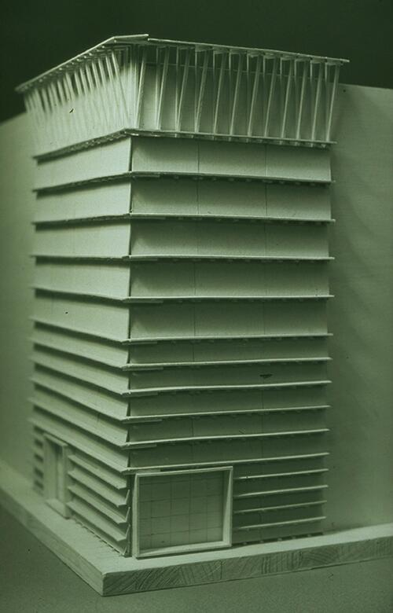
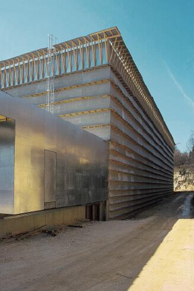
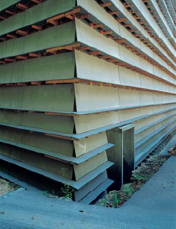
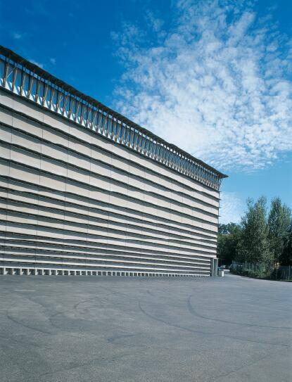
Il modello come test di materia, luce e comportamento
Nel progetto per il Ricola Storage Building, Herzog & de Meuron trasformano il modello in un vero dispositivo critico, non come miniatura rappresentativa, ma come strumento per verificare l’identità materiale dell’edificio. La ricerca si concentra sulla pelle architettonica: una superficie composta da listelli sovrapposti, derivata dall’iconografia del legno accatastato, che deve funzionare contemporaneamente come muro, filtro luminoso, immagine e struttura. È nel modello che questa pelle viene messa alla prova: non per illustrarla, ma per testarne densità, trasparenza, spessore, ritmo, variazioni d’ombra durante il giorno.
Herzog & de Meuron lavorano sulla superficie come campo sensibile: ciò che conta non è la forma volumetrica, ma il comportamento materico. Il modello permette di verificare come la sovrapposizione dei listelli generi profondità ottiche, come la luce si infiltri tra le lamelle, come il volume perda compattezza assumendo caratteristiche quasi atmosferiche. La costruzione diventa dunque un laboratorio in cui si misura la soglia tra opacità e trasparenza, tra massa e pelle, tra immagine e corpo architettonico.
La forza critica dell’opera — e del modello — risiede in questa ambiguità produttiva: un edificio industriale che funziona come un organismo poroso, capace di variare continuamente a seconda della luce. Il modello rivela ciò che il disegno non può mostrare: come la materia si comporta nello spazio e come questo comportamento diventi architettura. In questo senso, il Ricola di Herzog & de Meuron esprime perfettamente la logica della presente scheda: il modello non riproduce l’edificio, ma lo fa emergere.
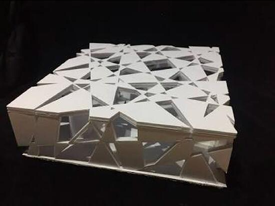
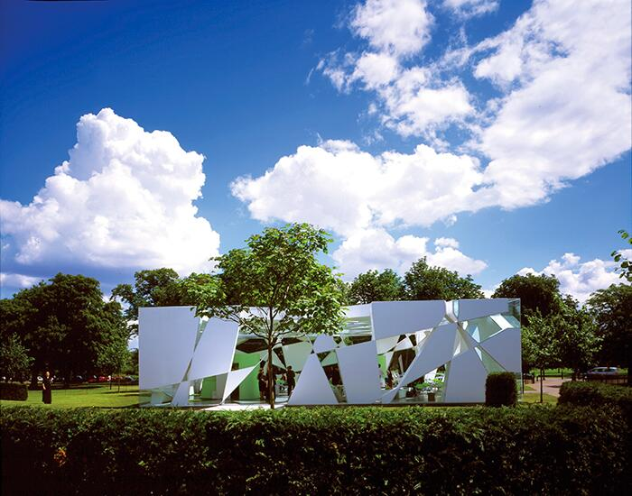
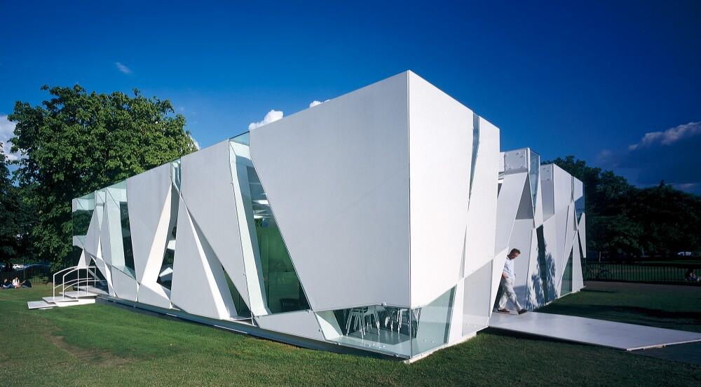
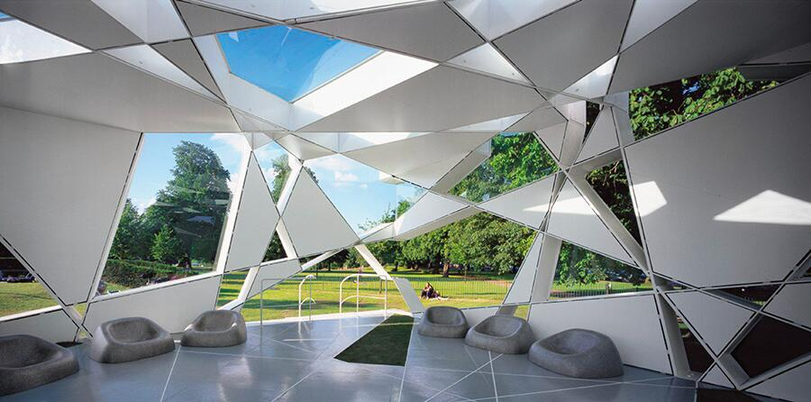
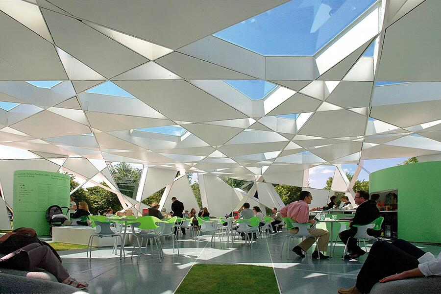
Il Padiglione per Mont-de-Marsan rappresenta un momento esemplare della ricerca di Toyo Ito sulla dissoluzione dell’oggetto architettonico in una membrana fluida, capace di comportarsi come un organismo leggero e permeabile. Nel progetto, la forma non nasce da un gesto formale o da una composizione volumetrica, ma da una sperimentazione materiale condotta attraverso il modello. È il modello, infatti, a permettere a Ito di verificare come una superficie traforata possa diventare struttura, luce e spazio allo stesso tempo.
Il padiglione è concepito come un guscio curvilineo di elementi sottili, traforati secondo una logica quasi digitale ante litteram. Il modello serve a testare densità, aperture, torsioni e la continuità tra le parti: un laboratorio in cui la pelle architettonica rivela il proprio comportamento prima ancora che il sistema costruttivo venga definito. Le perforazioni, studiate nel modello con variazioni minime, determinano non soltanto la vibrazione luminosa interna, ma anche la rigidità e la stabilità dell'involucro. La forma, dunque, non è imposta: emerge come esito di una serie di verifiche sul rapporto tra superficie e struttura.
In questo senso, il padiglione di Ito incarna perfettamente il tema della scheda 5.5: il modello non è una miniatura dell’edificio, ma il luogo in cui il progetto prende davvero forma. È nel modello che la membrana si piega, si irrobustisce o si alleggerisce; è nel modello che si misura la coerenza di un’idea che aspira a diventare spazio costruito. L’architettura, qui, non è un oggetto da rappresentare, ma un comportamento da verificare.